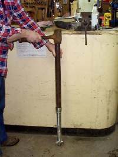
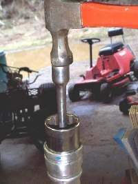

A new fork seal is easily cut by the sharp edge of the tube or by the groove for the clip. It also leaks if it goes in tilted. This page covers the fitting step of a seal replacement. It follows Replace fork oil and seals, which is a workshop job on this site.
Safety
- Support the fork leg in a vice with soft jaws or a clamp that will not crush the tube.
- Fork oil on the floor is slippery. Wipe it up.
- If the tube is pitted, bent or scored, a new seal will not hold. Replace the tube.
You need
- The correct seal and dust seal for your fork. Read the size on the old seal.
- A thin sheet of plastic, such as from a clean plastic jug, to wrap the top of the tube.
- Seal grease or clean fork oil.
- A driver that pushes only on the hard outer rim of the seal: a purpose-made driver, a pipe of the right diameter with a smooth edge, or a socket of the right size.
Steps
- Clean the leg and tube. Remove all old oil and dirt. Run a finger around the seal seat and the tube end to feel for burrs.
- Slide the old seal and the dust seal off the tube. Note which way they face.
- Wrap the plastic sheet around the top end of the tube so it covers any groove or sharp edge.
- Grease the new seal lips and push the seal over the plastic and down the tube. Remove the plastic.
- If the bush must go in first, tap it in with a flat punch at one spot, then 180 degrees round, and keep alternating so it goes in level.
- Slide the driver over the tube and tap the seal down, working evenly. Check it is square. Stop when the clip groove is visible.
- Fit the clip fully into its groove. Press on the dust seal.
- Refill the leg with the grade and amount of oil in your bike's manual.
Check your work
- The seal sits flat all the way round and is not tilted.
- The clip is fully in its groove.
- The tube slides smoothly in and out with no rough spots.
If it did not fix the problem
- The leg leaks again: Fork leaks again after new seals.
- Sticky or stiff action: Front forks feel sticky or stiff.